从启蒙到真实代码
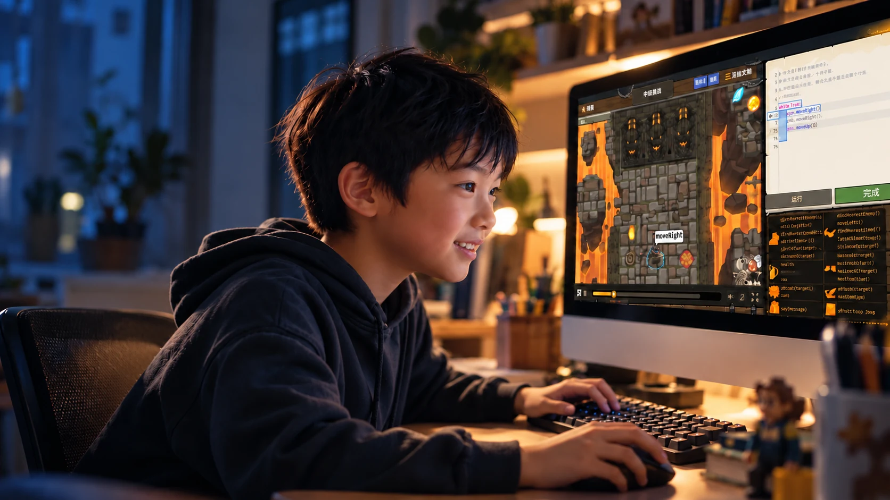
电脑、平板均可使用
网页版，打开就能学
完整课程，按自己节奏学
学习地图
编程关卡
全程引导陪学
零基础也能开始
这些场景，你大概都经历过
他不是不爱学，
只是学习还不够好玩。
与其拦着孩子别玩游戏，
不如让游戏教会他编程。
家长不懂编程，
孩子一卡住，就只能干着急。
不用再先学一遍，
才有办法陪孩子继续。
三分钟热度的孩子，
能不能这次坚持下去？
不想又报了一门课，
最后还是靠每天催。
不用接送、不用陪读，
孩子在家自己就能学。
省下的不只是钱，
是你每天盯着他学习的那两个小时。
线下课要等班上进度，
这里能不能学多快走多快？
校内学得浅、还想继续深入，
也想给孩子一条清楚的路。
学编程像打游戏一样有趣
写一行代码，角色立刻执行。if 和 for，变成英雄的剑招与魔法。
写代码，就是指挥英雄
每次运行都看得见结果，让抽象语法变成眼前的行动。
函数就是英雄装备
学会一个，就多一个新技能，用新的编程知识完成新的挑战。
还想再闯一关
2300+ 关卡逐步增加挑战，让孩子在“跳一跳够得着”的难度里，探索新地图、完成新任务，把想继续玩的劲头变成学习动力。
CodeCombat 学习者“每天打开 CodeCombat 开始闯关……不是我有多自律，是这个东西真的会让你特别专注。”
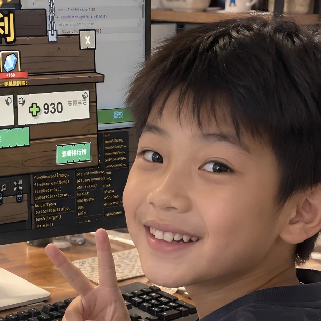
AI陪学，让孩子自己会学，家长真正省心
卡住时不替他作答，一步步引导他找到自己的解法；从“要我学”，走向“我要学”。
把“我不会”，变成“我再试试”
AI 时代，让孩子拥有自己会学的能力。
AI 引导思考，扣哒鸭陪伴探索
卡住时给提示、不直接给答案，让孩子一步步找到解法。
难了有提示，简单了能跳关
按自己的水平自由闯关，不打击信心，也不浪费时间。
家长不用懂编程，也能看进步
不用一直陪学，从闯关记录了解学了什么、卡在哪、进步多少；请孩子讲一次解法、改一个条件，就能一起看见理解。
孩子越学越独立，家长越陪越轻松。
完整编程知识体系，玩的是游戏，练的是真本事
11张学习地图、2300+编程关卡，从认识第一行代码开始，一步步学到能够独立编写完整项目。

一条连续的学习路线
图形化启蒙 → Python / C++ → 算法与项目。用知识树看清当前学什么、下一步去哪。
按兴趣选择方向
基础语法、游戏开发、网页开发，一路深入；按目标探索 Python、JavaScript、Lua、C++、Java 等语言。
每一步都有图文讲解
概念、示例、常见错误，随时查漏补缺。
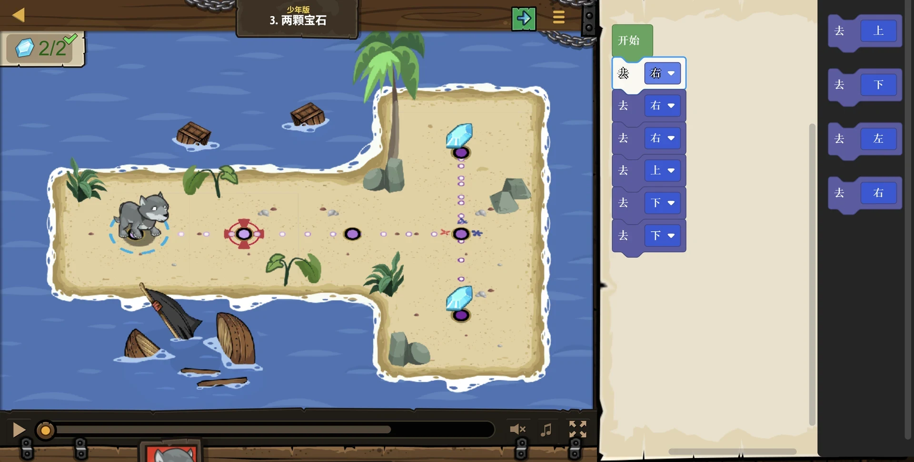
6–7 岁参考 · 初次接触
图形化启蒙
理解指令、顺序和任务拆解。先用直观操作，建立自己的逻辑基础。
从“看得懂”到“排得对”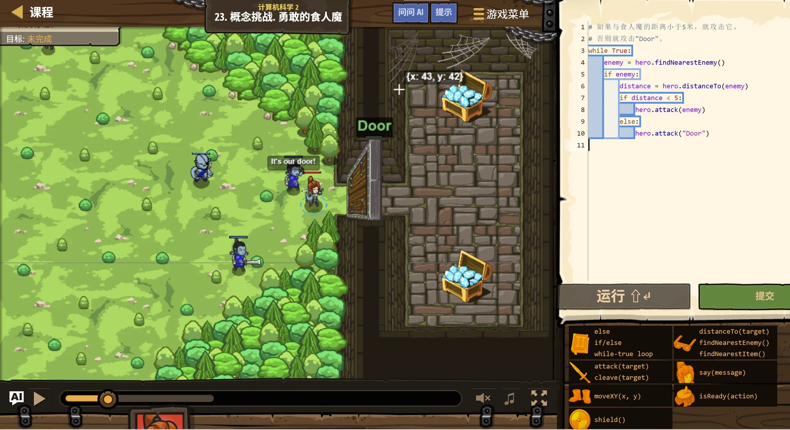
8 岁以上参考 · 代码入门
Python 代码编程
认识变量、条件、循环与函数，练习阅读、编写和修改真实代码。
从“照着写”到“自己改”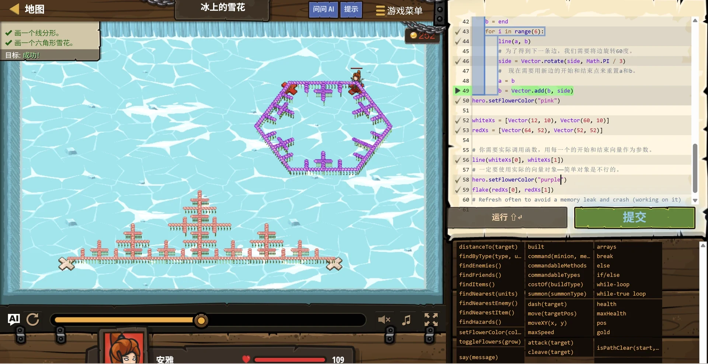
已有基础 · 按目标进阶
算法、项目与 C++
继续挑战算法、游戏开发、网页开发；有考级目标，可选择 C++ 方向，逐步接触递归与搜索、哈希、图遍历、动态规划。
从“会过关”到“能创作”CodeCombat 课程体系
从第一步启蒙，到用代码和 AI 创作
五个方向，按基础与兴趣选择。
每一列，由下向上看进阶。
左右滑动，查看完整的五条学习路线
- 综合应用
任务拆解 · 变量初步
把多种指令组合成解法
- 逻辑练习
条件判断 · 重复循环
识别规律，选择不同动作
- 直观入门
方向动作 · 顺序指令
让角色按自己的安排前进
图形化
先建立编程思维
少年版 · 图形化启蒙
读懂任务，排出解题步骤
- 算法探索
递归 · 排序 · 哈希 · 向量
计算机科学 6
- 数据处理
数组遍历 · 搜索 · 二维数组
计算机科学 4–5
- 逻辑与函数
条件 · 布尔 · 字符串 · 函数
计算机科学 2–3
- 代码入门
基本指令 · 变量 · 循环
计算机科学1
Python
从第一行到算法思考
计算机科学1 → 6
编写、解释与修改真实代码
- 算法进阶
递归 · 排序 · 哈希 · 向量
组合知识解决复杂任务
- 数组与搜索
遍历 · 嵌套循环 · 二维数组
组织数据，比较不同解法
- 程序逻辑
条件判断 · 函数 · 参数
拆分任务，复用自己的方法
- 语言入门
C++ 语法 · 变量 · 循环
在任务中练习代码表达
C++
打牢代码与算法基础
计算机科学1 → 6
为后续算法与信奥学习打基础
- 网页创作
网页结构 · 样式排版
学习 HTML/CSS，制作自己的页面
- 综合创作
跑酷游戏 · 得分与平衡
游戏开发 3：组合规则完成项目
- 交互设计
事件 · 碰撞 · 计时 · 随机
游戏开发 2：做收集与对抗游戏
- 创作起步
搭场景 · 放角色 · 设目标
游戏开发 1：设计第一款小游戏
项目课
把代码做成自己的作品
游戏开发 1–3 · 网页开发
从可玩小游戏，到自己的网页
- 综合素养
网络安全 · 生涯规划 · 生涯规划2
隐私防护 · 项目协作 · 生涯探索
- 跨学科应用
数学与统计 · 英语语言艺术 · 计算机科学
数据表达 · 叙事写作 · 应用创作
- AI 深入实践
人工智能1 · 人工智能2
机器学习 · 网页应用 · 数据科学
- AI 创作入门
AI入门 · AI沙盒 · AI探索
提示词 · 事实核查 · 图像与文本
扣哒宇宙AI课
会提问，也会验证和创作
11 个主题模块
把想法表达清楚，做出可检验成果
方向可以衔接，也可以独立选择，无需依次学完五列。扣哒宇宙 AI 课与编程闯关账号的权益分别确认。
CodeCombat产品哲学
CODE 深度学习模型
让孩子愿意尝试，
也练习独立解决问题。
- CChallenge
挑战驱动
有目标，愿意学把学习变成一个想完成的任务。
- OOperate
动手实践
亲手写，理解深写代码、运行，让想法变成行动。
- DDebug
反馈纠错
看反馈，会思考观察结果，找原因，再修改。
- EEvolve
持续进阶
换任务，用得上在新的挑战中，重新运用所学。
年龄是参考，选择时也要结合阅读与键盘操作能力。已经熟悉图形化的孩子，可以从代码编程开始；不同语言与开发方向按目标选择，不需要同时学完；具体课程与语言权益以官网说明为准。
全球游戏化编程开创者
全球权威认证，是经过全球验证的靠谱平台。
诞生于美国硅谷，13 年专注于这一件事。
全球学习者的选择
覆盖国家
专注游戏化编程
75,000合作学校
320,000全球教师信赖
520 万编程比赛专业选手也在玩
课程认证与教育合作
教育部白名单赛事
独家技术合作平台
2022 年 · 产品资料记录全球信息学奥林匹克竞赛 IOI
入围 IOI 专项赛
2021 年 · 产品资料记录美国大学理事会 AP CSP
官方认证课程提供商，课程对齐 CSTA K–12 计算机科学标准与 ISTE 教育技术标准。
Code.org · CSforAll
Code.org 官方合作伙伴 · CSforAll 官方成员
媒体报道 · 硅谷起源 · YC 资本投资
BBCEdSurge华尔街日报TechCrunch
品牌资料与数据说明
本区品牌数字、认证与合作信息按现有产品资料保留，具体统计口径、年份及证明材料仍需核查；不代表个人学习效果或考级结果。
▶产品介绍
产品起源 · 产品哲学 · 用户故事 · 媒体报道
完整视频素材准备中想更深入地了解，
这里留给产品背后的故事。
从为什么用游戏教编程，到孩子怎样在探索中成长。完整产品介绍将放在这里，方便有兴趣的家长继续了解。
性价比高，内容量大得多，进度自己掌握不拖拉
2300+ 实战关卡，一次拥有
一个账号，解锁从 Python 到 C++、网页开发到 AI 编程的完整内容，不用到处拼课程。
学习成本低，接送时间也省下
比线下编程课动辄数千元的学期费用更容易负担。在家自学，把时间留给孩子真正动手。
学会了就往前，不用等全班
难了有提示，简单了能跳关。不打击信心，也不浪费时间；孩子自己调整速度，学得快就能更快学完。
CodeCombat 学习者“每当我通过一关，看到‘宝石掉落’的成就感，我就觉得自己在走向未来，这种投资比买奶茶值多了！”
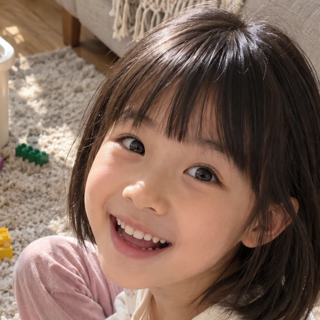
免费编程考级备考+免费信奥学习内容
两块内容都免费：137 个编程考级单元，覆盖 GESP 一至八级；信奥内容从基础篇 21 章走到算法篇 14 个专题。学完能自测，家长也看得出孩子掌握到哪一步。
考级和信奥，都在一个账号里
137 个考级单元从图形化、Python 一路到 C++；想往竞赛走，接着学信奥的基础篇与算法篇，不用另买一套课。
每个单元都有目标和小结，进度看得见
该会什么、学完怎么检查，都写在单元里。家长不懂编程，请孩子讲一次思路、演示一次运行，就知道掌握没有。
按考纲编制，学一级考一级
每个单元都有“考纲对照”，学了什么、对应哪一条要求一看就明白，不超纲。考级自选，实际报考看掌握情况。
零基础能起步，有基础能插班
6–7 岁图形化起步，8 岁以上可尝试 Python，目标信奥可选 C++；已有基础先做试卷自测，低于合格线就从这一级学起。
免费内容与付费闯关套餐分开看。137 个编程考级单元与信奥学习内容都不设付费墙；考级与竞赛均自选，报名与费用以主办方为准，不承诺过级、获奖或升学结果。产品资料建议每级 5–8 个单元、每周 1 个单元，参考 8–10 周走完一级；每年 4 次考期，以主办方当期公告为准。
孩子每天都会打开电脑，区别只在打开后做什么
从放学后到寒暑假，说说家长关心的那些事。家长视角场景文案 · 非真实用户评价
“他一放学就想玩电脑，我更希望这份兴趣，能用来学点真本事。”
我想先让他试试，能不能从玩游戏，走到自己写代码。
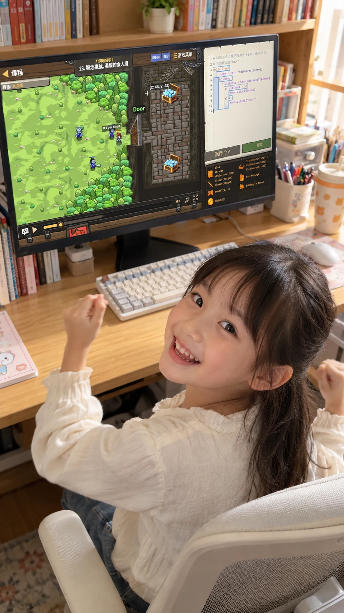
“我们下班晚，实在顾不上接送。要是在家也能学，卡住时还有提示，就轻松多了。”
我不懂代码，但希望能从他的练习和讲解里，看懂他学了什么。
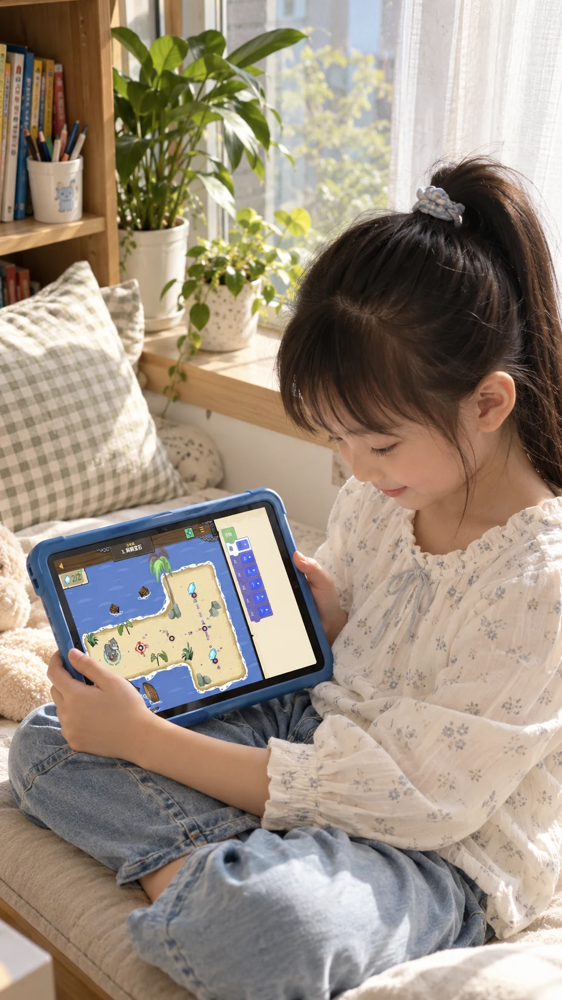
“我不怕他做得慢，就怕一遇到难题，马上把电脑推给我。”
我更想听见他说“我再试试”，而不是由我替他把题做完。
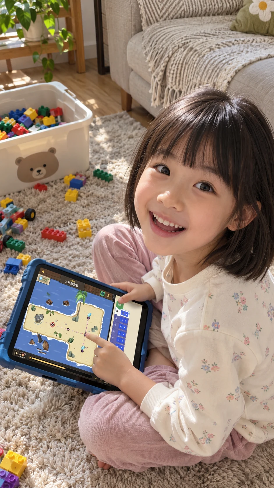
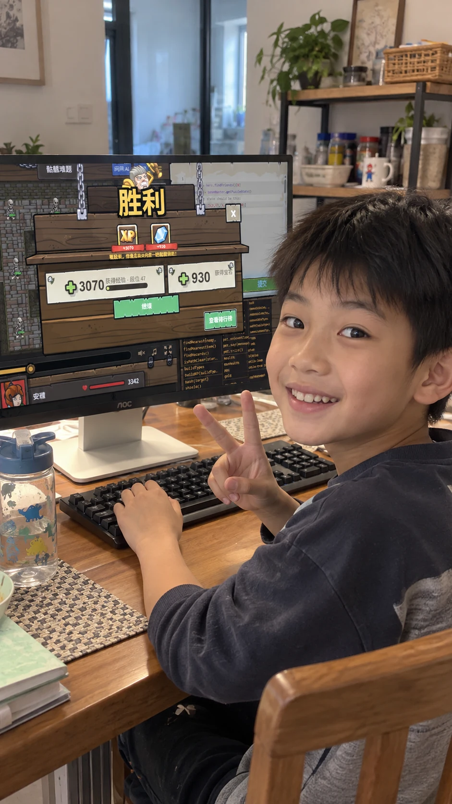
“假期不想把他的时间排得太满，也希望他每天都有一点小收获。”
有一个能按自己节奏完成的小目标，比我每天追着催，更容易安排。
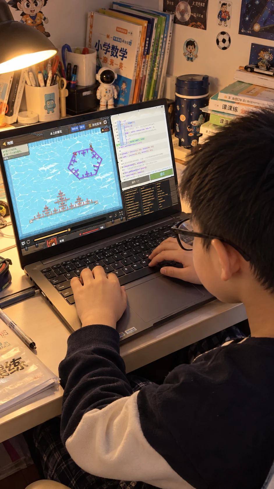
“学校里刚接触编程，他还挺感兴趣。我想给他找一条能继续学下去的路。”
从图形化到真实代码，下一步学什么，我也想看得明明白白。
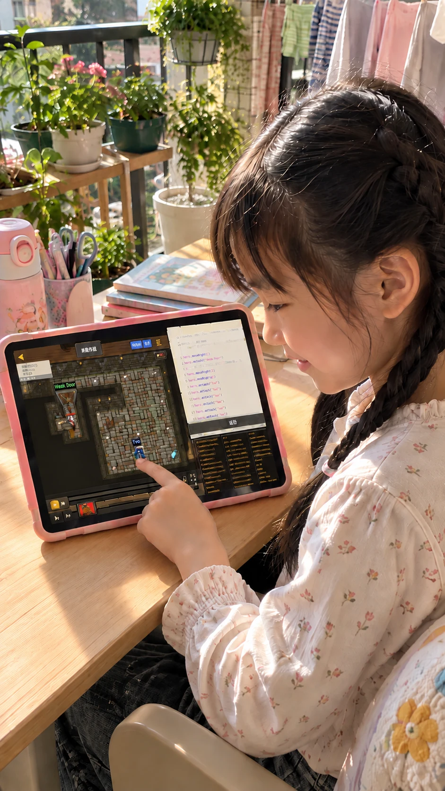
“过了多少关，我未必看得懂。可他要是能讲清自己怎么改的，我就知道该看哪里了。”
能自己讲个方法、改个条件，这样的进步，我才看得见。
先免费体验，合适再开通
不用一次报几年，也不用每周接送。孩子喜欢，再为这一年的学习留出时间。
这一年，孩子能拿到什么
- 11 张学习地图、2300+ 关卡，按自己的节奏一级一级闯
- 图形化 → Python → C++，从第一行代码走到算法
- 游戏开发、网页开发，做出能玩、能发给同学的作品
- AI 助教全程陪学，卡住给提示，不直接给答案
- 图文教程 + 知识树，家长看得到他学到哪一步
- 137 个 GESP 单元免费，按考纲逐级备考
- CSP-J 至 CSP-S 信奥内容免费，考级之后接着往上
- 会员期内大群答疑，遇到问题有人回应
一个账号，全部解锁，不再另收课时费。电脑、平板都能用，同一账号可多设备登录。
日均费用按一年折算，不代表按日收费。套餐权益与条款以 codecombat.cn 为准。每个账号仅适合一个孩子使用。
买前先看清楚
适合自己的学习方式，从把问题问明白开始。
孩子零基础，家长也不会编程，可以开始吗？＋
6 岁以上，零基础可用。根据阅读和电脑操作能力，从图形化或代码入门开始。家长先帮助登录、熟悉操作，之后可让孩子结合图文教程与 AI 助教自主探索。
用什么设备学？需要下载 App 吗？＋
网页版，不需要下载 App；支持平板。代码学习建议使用电脑，或配有键盘的平板。购买前请用计划学习的设备先完成免费体验。
课程包含哪些语言与学习内容？＋
图形化、Python、C++ 是主要展示路线。11 张学习地图、2300+ 编程关卡；含图形化与代码编程内容，覆盖基础语法、算法、游戏开发、网页开发，提供详细图文教程。还可按目标探索 JavaScript、Lua、Java 等语言；语言入口、AI 服务及具体权益以官网为准。
一个账号能给两个孩子用吗？＋
不可多孩共用，每个账号仅适合一个孩子使用，保留独立学习记录。同一个孩子可以在多台设备登录。
怎样体验、开通？有效期和退款怎么看？＋
前 8 关免费体验，第 9 关起需开通账号；支持微信支付。体验与购买均前往官网。价格、有效期起算方式、开通后的退款规则、设备与浏览器要求、套餐权益与服务条款，请在官网购买前确认。
AI 都会写代码了，孩子为什么还要学？＋
需要练习的不只是语法，还有拆解问题、建立逻辑、判断结果和调试错误。懂得代码怎样运行，才更容易判断 AI 给出的解法是否正确，把自己的想法表达清楚。AI 助教与扣哒鸭帮助孩子思考，孩子仍要亲手修改、运行，并解释自己的方法。
从注册到第一关，一起开始。
注册账号 → 选择入口 → 写下代码 → 运行闯关